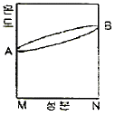
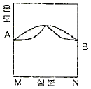
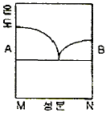
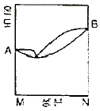
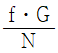
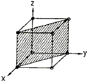
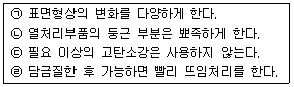

금속재료산업기사 (2010-03-07 기출문제)
1과목: 금속재료
1. 프레스형, 다이캐스트용 다이스 등에 사용되는 열간 금형용 합금공구강이 갖추어야 할 성능이 아닌 것은?
- 고온경도 및 강도가 높은 것
- 열충격, 열피로 및 뜨임연화 저항이 작을 것
- 피삭성 및 용접성이 좋을 것
- 내마모성이 크고 용착, 소착을 일으키지 않을 것
(정답률: 85%)

2. Al-Si계 합금은 주조조직에 나타나는 Si는 육각판상의 거친 결정이므로 접종시켜 조직을 미세화 시키고 경도를 개선시키는 처리를 개량처리라 한다. 다음 중 접종제가 아닌 것은?
- 금속 나트륨
- 불화알칼리
- 가성소다
- 알루미늄
(정답률: 73%)
3. 주철에서 접종(inoculation) 처리의 목적으로 틀린 것은?
- 흑연형상의 개량
- 기계적 성질의 향상
- Chill화의 방지
- 격자결함의 증대
(정답률: 87%)
4. 황동 제품의 탈아연 부식 및 탈아연 현상에 대한 설명으로 틀린 것은?
- 탈아연 현상이란 고온에서 증발에 의하여 황동 표면으로부터 Zn이 탈출되는 현상을 말한다.
- 탈아연 부식을 억제하기 위해서는 As, Sb, Sn 등을 첨가한 황동을 사용한다.
- 탈아연 부식은 고아연황동 즉 α, δ 또는 ϵ 단상합금에서 관찰할 수 있다.
- 탈아연 부식은 물질이 용존하는 수용액의 작용에 의하여 황동의 표면 또는 깊은 곳까지 탈아연되는 현상이다.
(정답률: 59%)
5. 냉간 가공재를 재결정온도 이상으로 가열(풀림)할 때 발생하는 현상을 순서대로 나열한 것은?
- 재결정→회복→결정입자의 성장
- 회복→결정입자의 성장→재결정
- 회복→재결정→결정입자의 성장
- 결정입자의 성장→회복→재결정
(정답률: 86%)
6. 0.2% 탄소강을 850℃에서 서냉하였을 때 펄라이트가 35%이었다면 펄라이트 중의 Fe3C는 약 몇 %인가? (단, 공석점은 약 0.8%C이며, 탄소의 최대 고용랴야은 6.67%이다.)
- 3%
- 10%
- 22%
- 75%
(정답률: 42%)
7. Cr계 스테인리스강의 취성에 대한 설명으로 틀린 것은?
- 저온취성은 오스테나이트 강에 나타나며 페라이트 강에서는 나타나지 않는다.
- 475℃ 취성은 Cr 15% 이상의 강종을 370~540℃로 장시간 가열하면 취하하는 현상이다.
- σ취성은 815℃ 이하 Cr 42~82%의 범위에서 σ상의 취약한 금속간 화합물로 존재하여 취성을 일으킨다.
- 고온취성은 약 950℃ 이상에서 급랭할 때 나타나는 취성이다.
(정답률: 58%)
8. 분말야금(powder metallurgy)의 특징으로 틀린 것은?
- 절삭공정을 생략할 수 있다.
- 융해법으로는 만들 수 없는 합금을 만들 수 있다.
- 다공질의 금속재료를 만들 수 있다.
- 제조과정에서 융점까지 온도를 올려야 한다.
(정답률: 81%)
9. 합금강에서 합금원소의 효과에 대한 설명으로 틀린 것은?
- Ni은 내식성과 내산성을 증가시킨다.
- Cr은 내식성 및 내마모성을 감소시킨다.
- W은 고온강도를 크게 한다.
- Mo은 뜨임메짐을 방지한다.
(정답률: 79%)
10. 고망간강의 일종인 Hadfield steel의 설명으로 틀린 것은?
- 수인법을 이용한 강이다.
- 주요 조성은 0.9~1.4%, 10~15Mn%을 갖는다.
- 열전도성이 좋고, 열팽창계수가 작아 열변형을 일으키지 않는다.
- 광석ㆍ암석의 파쇄기 등 심한 충격과 마모를 받는 부품에 이용된다.
(정답률: 70%)
11. 구상흑연 주철의 기지조직에 따른 형태가 아닌 것은?
- 페라이트(ferrite)형
- 펄라이트(pearlite)형
- 오스테나이트(austenite)형
- 페라이트(ferrite)+펄라이트(pearlite)형
(정답률: 75%)
12. 탄소강 중의 Si가 0.1~0.35%정도 함유되었을 때의 영향으로 옳은 것은?
- 용접성을 향상시킨다.
- 연신율 및 충격값을 증가시킨다.
- 인장강도 및 탄성한계를 감소시킨다.
- 결정립을 조대화시키고 가공성을 해친다.
(정답률: 43%)
13. 연청동(lead bronze)에 대한 설명 중 틀린 것은?
- 주석청동에 납을 첨가한 것이다.
- 연청동은 윤활성이 우수하다.
- 조직의 미세화를 위하여 Ti, Zr 등을 첨가한다.
- 취성이 있기 때문에 베어링용 합금으로는 적합하지 않다.
(정답률: 75%)
14. 다음 중 니켈(Ni)에 대한 설명으로 옳은 것은?
- 니켈의 격자는 조밀육방격자이다.
- 니켈의 비중은 약 12.8이다.
- 니켈은 열간 및 냉간가공을 할 수 없다.
- 니켈은 대기 중에 부식되지 않으나 아황산가스 분위기에는 심하게 부식된다.
(정답률: 74%)
15. 전열합금에 요구되는 특성으로 틀린 것은?
- 재질이나 치수의 균일성이 좋을 것
- 전기저항이 낮고 저항의 온도계수가 클 것
- 열 팽창계수가 작고 고온강도가 클 것
- 고온대기 중에서 산화에 견디고 사용온도가 높을 것
(정답률: 86%)
16. 섬유강화금속(FRM)의 특성으로 틀린 것은?
- 비강도 및 비강성이 높다.
- 2차성형성 및 접합성이 없다.
- 섬유축 방향의 강도가 크다.
- 고온에서의 역학적 특성 및 열적안전성이 우수하다.
(정답률: 77%)
17. 상온 또는 가열된 금속을 실린더 모양을 한 컨테이너에 넣고 한 쪽에 있는 램에 압력을 가하여 밀어 내어 봉, 관, 형재 등을 제작한 가공방법은?
- 전조가공
- 단조가공
- 프레스 가공
- 압출 가공
(정답률: 86%)
18. 다음 중 탄소강의 5대 원소가 아닌 것은?
- P
- S
- Ni
- Mn
(정답률: 82%)
19. 한번 어느 방향으로 소성변형을 가한 재료에 역방향의 하중을 가하면 전과 같은 방향으로 하중을 가한 경우보다 소성변형에 대한 저항이 감소하는 것을 무엇이라 하는가?
- 바우싱거효과
- 크리프효과
- 재결정효과
- 포아송효과
(정답률: 87%)
20. 금속의 변태 중 동소변태인 것은?
- AO
- A2
- Acn
- A4
(정답률: 78%)
2과목: 금속조직
21. 다음 중 상온상태의 결정구조가 면심입방격자(FCC)를 나타내는 원소가 아닌 것은?
- Cu
- Au
- Al
- Fe
(정답률: 63%)
22. Al-4%Cu 석출강화형 합금에서 석출강화에 영향을 주는 상은?
- α상
- β상
- θ상
- γ상
(정답률: 78%)
23. 마텐자이트 변태에 대한 설명으로 틀린 것은?
- 고용체에 단일상이며, BCC 또는 BCT 구조를 갖는다.
- 오스테나이트에 고용한 용질원자 농도와 마텐자이트상의 용질원자 농도는 변화가 없다.
- 마텐자이트 변태를 하면 표면에 기복이 생긴다.
- 마텐자이트 내에는 격자결함이 존재하지 않는다.
(정답률: 65%)
24. 면심입방격자에서 단위격자에 속하는 원자수와 충전율은?
- 원자수 2, 충전율 68%
- 원자수 4, 충전율 74%
- 원자수 6, 충전율 68%
- 원자수 7, 충전율 74%
(정답률: 76%)
25. 합금과정에서 규칙격자 결정을 가지게 되면 물리적, 기계적 성질은 일반적으로 어떻게 변화하는가?
- 전기전도도는 증가하고 연성은 감소한다.
- 전기전도도 및 경도가 감소한다.
- 전기전도도는 증가하고 경도와 강도는 감소한다.
- 연성은 증가하고 경도 및 전기전도도는 감소한다.
(정답률: 65%)
26. 다결정재료의 결정립계에 의한 강화방법에 대한 설명으로 틀린 것은?
- 결정립계에 의한 강화는 결정립 내의 슬립이 상호 간섭함으로써 발생된다.
- 결정립계가 많을수록 재료의 강도는 증가한다.
- 결정의 입도가 작아질수록 재료의 강도는 증가한다.
- Hall-Petch식에 의하면 결정질 재료의 결정립의 크기가 작아질수록 재료의 강도는 감소한다.
(정답률: 75%)
27. 전율고용체 A, B 합금에서 강도 및 경도가 최대로 되는 경우는?
- 양성분 금속의 원자가 A10% : B90% 비율로 혼합될 때
- 양성분 금속의 원자가 A10% : B70% 비율로 혼합될 때
- 양성분 금속의 원자가 A10% : B50% 비율로 혼합될 때
- 양성분 금속의 원자가 A10% : B30% 비율로 혼합될 때
(정답률: 47%)
28. 치환형 고용체에서 용질원자가 용매원자의 치환이 난잡하게 일어날 때 고용체의 격자정수의 값은 용질원자의 농도에 비례하는 법칙을 무엇이라 하는가?
- 베가드의 법칙
- 후크의 법칙
- 보일의 법칙
- 샤를의 법칙
(정답률: 64%)
29. 침입형 고용체의 결함으로 공격자점과 격자간원자는 어떤 결함에 해당하는가?
- 면결함
- 선결함
- 점결함
- 체적결함
(정답률: 72%)
30. 불규칙에서 규칙상이 되면 일반적으로 단위격자가 커지는 현상을 무엇이라 하는가?
- 초격자
- 규칙격자
- 감마격자
- 불규칙격자
(정답률: 56%)
31. 다음의 그림 중 전율고용체 형태의 합금 상태도가 아닌 것은?




(정답률: 74%)
32. 다음 중 결정립 형성에 대한 설명으로 틀린 것은? (단, G는 결정성장속도, N은 핵발생속도, f는 상수이다.)
- 결정립의 대소는

로 표현된다. - 금속은 순도가 높을수록 결정립의 크기가 작은 경향이 있다.
- G가 N보다 빨리 증대할 경우 결정립이 큰 것을 얻는다.
- N이 G보다 빨리 증대할 경우 결정립이 미세한 것을 얻을 수 있다.
(정답률: 80%)
33. 정삼각형의 각 정점으로부터 대변에 평행으로 10 또는 100등분하고 삼각형 내의 어느 점의 농도를 알려면 그 점으로부터 대변에 내린 수선의 길이를 읽으면 되는 삼각형법은?
- Linz's 삼각법
- Lever relating 삼각법
- Cottrell 삼각법
- Gibb's 삼각법
(정답률: 83%)
34. 탄성계수가 큰 재료의 특징으로 틀린 것은?
- 융점이 높다.
- 강성(剛性)이 크다.
- 전기저항도가 크다.
- 원자의 결하에너지가 크다.
(정답률: 49%)
35. 다음 중 응고 시 체적 팽창을 나타내는 것은?
- Sn
- Bi
- Pb
- Zn
(정답률: 54%)
36. Fe의 단결점이 가장 자화하기 쉬운 방향은?
- [111]방향
- [001]방향
- [010]방향
- [100]방향
(정답률: 59%)
37. 2성분계 합금상태도에서 편정반응을 나타내는 식은? (단, 반응식에서 L, L1, L2은 액상이며, α, β, γ는 고상을 나타낸다.)
- L⇆α+3
- L1⇆α+L2
- L⇆β+γ
- β⇆α+L
(정답률: 69%)
38. 한 용매금속에 다른 용질금속이 용해 혼합되어 물리적, 기계적 방법으로 식별하기가 어렵고, 액체의 상태가 응고후에도 그대로 나타나는 상태를 무엇이라고 하는가?
- 고용체
- 공석체
- 공정체
- 편정체
(정답률: 64%)
39. 금속의 응고과정에서 고상의 자유에너지 변화에 대한 설명으로 틀린 것은? (단. ro는 임계핵의 반지름, r은 고상의 반지름, Ev은 체적 자유에너지, Es는 계면 자유에너지이다.)
- r＜ro인 경우에는 반지름이 증가함에 따라 자유 에너지는 감소한다.
- ro이하 크기의 고상입자를 엠브리오(embryo)라 한다.
- ro이상 크기의 고상을 결정의 햇(nucleus)이라 한다.
- 고상의 전체 자유에너지의 변화는 E=Es-Ev로 표시된다.
(정답률: 65%)
40. 다음 그림에서 사선으로 표시한 면의 지수로 옳은 것은?

- (111)면
- (101)면
- (110)면
- (011)면
(정답률: 76%)
3과목: 금속열처리
41. 고온 가스 침탄법에 대한 설명으로 틀린 것은?
- 침탄 시간이 짧다.
- 탄소 농도 구배가 완만하다.
- 높은 온도에서 처리되므로 결정립 성장을 일으키지 않는다.
- 로의 내화물, 라디안트 튜브, 트레이 등의 열화를 촉진한다.
(정답률: 68%)
42. 베릴륨 청동의 열처리 방법과 특성에 대한 설명으로 틀린 것은?
- 310~330℃에서 2~2.5시간 재결정 어닐링을 실시하여 고용강화를 한다.
- 인장강도와 항복점이 높아 고온 및 부식 환경에 있는 스프링 접촉자에 사용된다.
- 소정의 온도에서 담금질하면 이 고용체의 단상 또는 α+β의 2상 혼합체가 된다.
- 전기 전도도가 좋고, 내식성이 좋으며 열처리에 의해서 탄성한도가 높아진다.
(정답률: 50%)
43. 침탄온도 871℃로 8시간 침탄할 때 생성되는 침탄층의 깊이를 해리스(Harris)의 계산식에 의하여 계산한 침탄층의 깊이는 약 몇 mm인가? (단, 온도에 따른 확산정수는 0.457이다.)
- 0.8
- 1.3
- 1.6
- 2.1
(정답률: 48%)
44. Y합금이나 알팩스-β 합금과 같이 강도, 항복강도 및 경도 등이 최고인 Al 합금으로 고온 가공에서 냉각 후 인공 시료 경화처리한 것이란 뜻의 질별 기호로 옳은 것은?
- T3
- T4
- T5
- T6
(정답률: 50%)
45. 담금질(quenching)시 균열이나 비틀림의 방지대책이 옳은 것끼리 짝지어진 것은?

- ㉠, ㉡
- ㉡, ㉢
- ㉢, ㉣
- ㉠, ㉣
(정답률: 86%)
46. 다음 중 화염경화처리의 특징으로 옳은 것은?
- 부품의 크기나 형상에 제한이 많다.
- 국부적인 담금질은 불가능하다.
- 담금질 깊이의 조절이 가능하다.
- 담금질 변형은 없으나. 내마모성이 떨어진다.
(정답률: 63%)
47. 냉각시의 A3변태(Ar3)를 설명한 것 중 옳은 것은?
- 탄소 함유량이 증가하면 A3변태온도는 저하한다.
- 순철에서는 δ상이 Y상으로 변태하는 온도이다.
- HCP에서 FCC로의 격자 변화가 일어나는 변태이다.
- 723~1495℃의 온도 범위에서 일어나는 변태이다.
(정답률: 45%)
48. 다음 중 분위기 열처리에 대한 설명으로 틀린 것은?
- 중성가스에는 수소, 암모니아 등이 있다.
- 발열형 가스의 원료 가스는 메탄, 프로판 등이 있다.
- 암모니아 가스를 고온으로 가열하면 2NH3⇆N2+3H2가 된다.
- 발열형 가스의 변성 반을은 완전 연소(이상연소)시 이산화탄소, 질소 및 수증기로 된다.
(정답률: 60%)
49. 고속도 공구강(SKH)의 열처리에 대한 설명으로 틀린 것은?
- 고속도 공구강의 담금질 온도는 약 1200~1280℃정도이다.
- 고속도 공구강의 탬퍼링 온도는 약 540~580℃정도이다.
- 일반적으로 담금질 온도가 높으면 고용량의 감소로 2차 경화 정도가 낮아진다.
- 퀜칭 시 탄화물의 고용에 의해 기지에 C, Cr, W, Mo, V등의 원소가 다량 고용하여 탬퍼링시 미세한 탄화물로 석출하여 2차 경화 현상을 일으킨다.
(정답률: 56%)
50. 다음 중 수용액에서 퀜칭시 냉각속도가 가장 빠른 단계는?
- 복사단계
- 비등단계
- 대류단계
- 증기막 형성단계
(정답률: 81%)
51. 다음 구조용 합금강 중 탬퍼링 취성을 일으키기 쉬운 강종은?
- Ni-Cr강
- Ni강
- Cr강
- Cr-Mo강
(정답률: 58%)
52. 고주파 유도 가열 경화법에 대한 설명으로 틀린 것은?
- 생산공정에 열처리 공정의 편입이 가능하다.
- 피가열물의 스트레인(strain)을 최소한으로 억제할 수 있다.
- 표면부분에 에너지가 집중하므로 가열시간을 단축시킬 수 있다.
- 전류가 표면에 집중되어 표피효과(skin effect)가 작다.
(정답률: 75%)
53. 강이 고온에서 열처리되어 탈탄이 되었을 경우 일어나는 현상으로 옳은 것은?
- 내피로강도를 증가시킨다.
- 탈탄층에는 펄라이트 조직이 발달한다.
- 표면에 인장응력이 발생하여 변형되거나 크랙의 원인이 된다.
- 결정이 미세화되어 기계적 성질이 향상된다.
(정답률: 73%)
54. 다음의 열처리 방법 중 취성이 가장 많이 발생하는 열처리 방법은?
- 불림(Normalizing)
- 풀림(Annealing)
- 뜨임(Tempering)
- 담금질(Quenching)
(정답률: 71%)
55. 과공석강을 완전풀림(full annealing)하여 얻을 수 있는 조직으로 옳은 것은?
- 시멘타이트+오스테나이트
- 오스테나이트+레데뷰라이트
- 시멘타이트+층상 펄라이트
- 페라이트+층상 펄라이트
(정답률: 77%)
56. 다음 중 A1 변태점 이상에서 가열하는 열처리 방법이 아닌 것은?
- 풀림(Annealing)
- 불림(Normalizing)
- 담금질(Quenching)
- 뜨임(Tempering)
(정답률: 73%)
57. 담금질에 따른 용적의 변화가 가장 큰 조직은?
- 마텐자이트
- 펄라이트
- 오스테나이트
- 베이나이트
(정답률: 78%)
58. 다음 중 연속로의 형태가 아닌 것은?
- 퓨셔형(pusher type)
- 컨베이어형(conveyor type)
- 상형(box type)
- 로상 진동형로
(정답률: 77%)
59. 회주철의 절삭성을 양호하게 하여 백선부분의 제거 및 연성을 향상시키기 위한 열처리 방법은?
- 담금질
- 연화 풀림
- 저온 뜨임
- 응력제거 담금질
(정답률: 74%)
60. 구상흑연주철의 열처리 및 그 특성에 대한 설명으로 틀린 것은?
- 연화 풀림 중 제2단계 흑연화 처리는 기지 조직을 페라이트로하여 연성을 높이는 처리이다.
- 구상흑연 주철에서 기지가 페라이트인 것은 Si가 낮을수록 확산이 느리다.
- 구상흑연 주철의 뜨임취성온도는 약 450~550℃정도이다.
- 구상흑연 주철은 보통 주철에 비하여 탄소의 확산이 빠르다.
(정답률: 60%)
4과목: 재료시험
61. 안전보건교육의 단계별 교육과정 중 지식교육, 기능교육, 태도교육 중 태도교육 내용에 해당되는 것은?(오류 신고가 접수된 문제입니다. 반드시 정답과 해설을 확인하시기 바랍니다.)
- 안전규정 숙지를 위한 교육
- 전문적 기술 및 안전기술 기능
- 작업동작 및 표준작업방법의 습관화
- 안전의식의 향상 및 안전에 대한 책임감 주입
(정답률: 62%)
62. 로크웰 경도시험기에서 다이아몬드 원추 누르개의 각도와 끝부위의 곡률 반지름은 몇 mm인가?
- 1⑤°, 0.⑤mm
- 116°, 0.10mm
- 120°, 0.20mm
- 136°, 0.50mm
(정답률: 71%)
63. 최대하중이 5652kg이고, 인장강도가 25kgf/mm2인 봉상의 인장시험편의 지름은 약 몇 mm인가?
- 8mm
- 10mm
- 13mm
- 17mm
(정답률: 36%)
64. 다음 중 비파괴검사의 목적이 아닌 것은?
- 제품에 대한 신뢰성 향상
- 비파괴 시험기의 결함 발견
- 제조기술 개선 및 제품의 수명연장
- 불량률 감소에 따른 생산원가 절감
(정답률: 77%)
65. 다음 중 굽힘시험에 대한 설명으로 틀린 것은?
- 굽힘균열시험으로 재료의 전성, 연성, 균열의 유무를 알 수 있다.
- 보통 굽힘시험에서 알 수 있는 비례한계는 명확하지 않다.
- 주철의 단면강도는 보통 파단계수로서 크기를 정한다.
- 굽힘파단계수는 인장강도에 비례하므로 단면형상과는 관계없다.
(정답률: 63%)
66. 자분탐상법에서 사용되는 자화전류의 종류가 아닌 것은?
- 잔류
- 교류
- 직류
- 맥류
(정답률: 56%)
67. 다음 중 방사선투과검사에서 사용되는 방사성동위원소의 반감기가 가장 긴 것은?
- Tm-170
- Ir-192
- Cs-137
- Co-60
(정답률: 64%)
68. 마모시험에서 내마모성에 대한 설명으로 틀린 것은?
- 거칠기가 크면 접촉이 나쁘며 응착이 커져 긁힘마모가 쉽다.
- 재료의 표면경도가 높으면 접촉점의 변형이 적고 마모에 강하다.
- 마찰열의 방출이 늦을수록 내마모성이 좋다.
- 표면 산화피막은 응착을 막을 정도의 것이 좋으며 취약하고 탈락이 쉬우면 마모가 크다.
(정답률: 63%)
69. 금속재료 현미경 조직시험에 대한 설명으로 틀린 것은?
- 시편채취 및 제작에서 절단시 발생되는 열에 의해 조직이나 기계적 성질이 변화되므로 조심스럽게 절단하여야 한다.
- 시편은 부식시킬 때 산고 알칼리류 시약의 취급은 환기가 잘 되는 배기장치 속에서 실시하며 시험자의 피부나 신체에 묻지 않게 노력한다.
- 현미경 조직사진 촬영시 미세한 진동이 없도록 하며, 가능한 카메라 셔터(Camera Shutter)의 진동도 없도록 주의한다.
- 현미경 조직사진의 현상 및 인화에 사용된 약품들은 사용 후 변질의 우려가 있으므로 시험이 끝난 후 하수구로 흘려버리는 것이 좋다.
(정답률: 77%)
70. 부식액에 시편을 침지하여 부식시켜서 조직이 잘 나타나지 않을 때 면봉 등으로 시편표면을 닦아 내면서 부식 시키는 방법은?
- Deep부식
- 전해부식
- Wipe부식
- 가열부식
(정답률: 78%)
71. 금속재료의 파괴원인 중 화학적인 현상에 해당되는 것은 어느 것인가?
- 충격에 의한 파괴
- 마모에 의한 파괴
- 피로에 의한 파괴
- 부식에 의한 파괴
(정답률: 81%)
72. 하중을 제거하면 소성변형이 되지 않고 원상태로 복위하는 범위는?
- 항복점
- 극한강도
- 비례한계
- 탄성한계
(정답률: 75%)
73. 철강재료를 자분탐상시험하여 결함 유무를 검사하고자 한다. 다음 중 적용할 수 없는 금속재료는?
- STC3
- STD61
- SKH51
- SRS304
(정답률: 65%)
74. `~5% 황산 수용액에 브로마이트 인화지를 5분간 담근 후 수분을 제거한 다음 이것을 피검사체의 시험면에 1~3분간 밀착시켜 철강 중에 있는 황(S)의 편석 분포상태를 검사하는 시험은?
- 후드(Hood)법
- 헤인(Heyn)법
- 제프리즈(Jefferies)법
- 설퍼 프린트(Sulfur Print)법
(정답률: 80%)
75. 강의 매크로 조직 검사에서 중심부 편석을 나타내는 기호로 옳은 것은?
- Sn
- Lc
- Sc
- Tc
(정답률: 75%)
76. 강철의 ASTM 입도 변화가 7일 경우 100배의 배율에서 현미경에 사진 1평방 인치 내에 들어있는 경정입자 수는?
- 8
- 16
- 64
- 82
(정답률: 66%)
77. 크리프시험에서 응력이완(Relaxation) 현상이란?
- 진변형이 증가되는 조건 하에서 부하되고 있는 온도의 증가와 더불어 나타나는 소성변형으로 인하여 응력(탄성변형)이 감소되는 현상을 말한다.
- 진변형이 증가되는 조건 하에서 부하되고 있는 온도의 증가와 더불어 나타나는 소성변형으로 인하여 응력(탄성변형)이 증가되는 현상을 말한다.
- 진변형이 일정의 조건 하에서 부하되고 있는 시간의 경과와 더불어 나타나는 소성변형으로 인하여 응력(탄성변형)이 감소되는 현상을 말한다.
- 진변형이 일정의 조건 하에서 부하되고 있는 시간의 경과와 더불어 나타나는 소성변형으로 인하여 응력(탄성변형)이 증가되는 현상을 말한다.
(정답률: 52%)
78. 다음 중 기포누설시험의 종류가 아닌 것은?
- 침지법(liquid immersion method)
- 가압 발포액법(liquid film method)
- 벡터 포인트법(vector point method)
- 진공 상자법(vacuum box technique)
(정답률: 49%)
79. 재료에 어떤 하중을 가하고 어떤 온도에서 긴 시간 동안 유지하면 시간의 경과에 따른 스트레인이 증가하는 현상은?
- 마모현상
- 에릭슨현상
- 피로현상
- 크리프현상
(정답률: 70%)
80. 브리넬(brinell) 경도시험에 대한 설명으로 틀린 것은?
- 시험하중을 누르개 자국의 표면적으로 나눈 값으로 표시한다.
- 철강과 비철금속의 구분 없이 주하중시간은 60초가 가장 적당하다.
- 시험편의 두께는 누르개 자국 깊이의 8배 이상으로 한다.
- 시험은 일반적으로 10~35℃ 범위에서 한다.
(정답률: 64%)